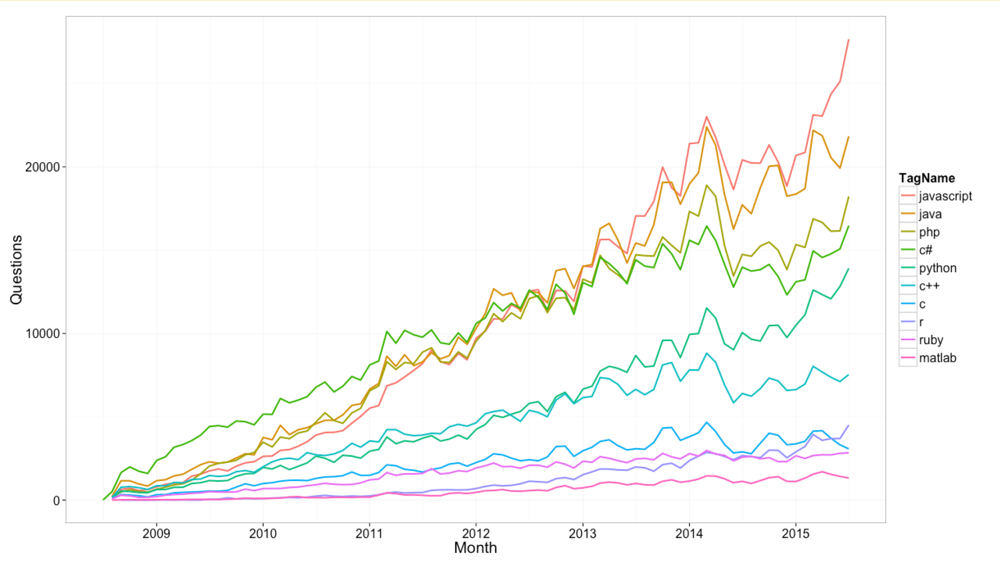
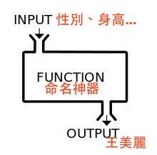
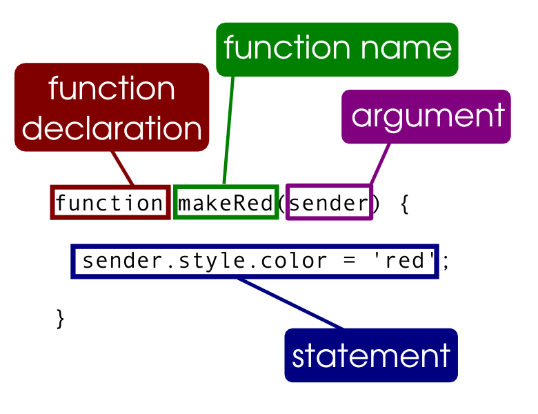
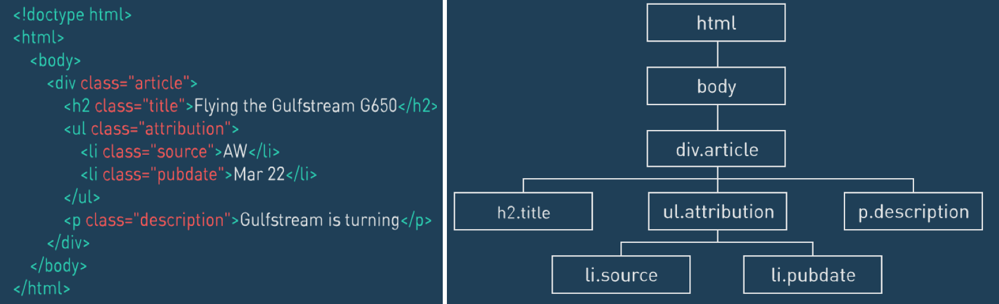

HTML5, CSS3, jQuery, Bootstrap 網頁設計基礎班
蔡智晴
JavaScript 是什麼？
- 是一種直譯式程式語言
- 目前在網頁設計最為熱門的語言
- 增加網頁的互動性
- 從前端到後端都可以用 JavaScript 完成
- 在 stackoverflow 的相關討論最多

Google Chrome JavaScript 控制台
- 檢視 >> 開發人員選項 >> JavaScript 控制台
- console.log 通常可以用來檢查錯誤用的 (debug)
- 來寫我們的第一行 JavaScript
- 結尾加上分號是好習慣！
- 分號：程式敘述結束符號程式敘述結束符號
console.log("Hello World!");
- 很多作品可以觀摩
- 拖拉式邏輯方塊、介面簡單
- 支援外掛：ScratchX
- Leap Motion
- Arduino
- Twitter
一個指令一個動作！
比起 HTML 和 CSS，再寫 JavaScript 要更仔細，否則真的會不能動！
網頁裡的 JavaScript 寫在哪裡？
- 在 HTML 檔案裡面：直接用 <script></script> 包住
- 獨立的 .js 檔案，再用 <script src="路徑"> 連結
- 在標籤裡面的 event（不太會拿來做複雜的事情）：例如 onclick="alert('Hello World!');"
好像有點熟悉？範例
JavaScript 放在哪？
<!DOCTYPE html>
<html>
<head>
</head>
<body>
JavaScript 函示庫！
自己寫的 JavaScript 東東
</body>
</html>
玩一下 Chrome 裡面的 console 吧！
來做簡單的數學運算～
- 78 + 82 = ?
- 67 / 25 + 74 = ?
- (111 + 222 - 123) * 2 / 10
Simple Interaction
popup 彈跳視窗
- alert()
- confirm()
- prompt()
alert()
跳出視窗上面顯示文字給使用者看
<p onclick="alert('大家早安！');">CLICK ME</p>
CLICK ME
confirm()
跳出視窗上面顯示文字並可以確定或取消
<script>
if (confirm("你確定？")) {
window.open("http://tw.yahoo.com","_blank");
}
</script>
CLICK ME
Variables 變數
- 像一個盒子一樣，可以放東西進去
- 語法：var 變數名稱（盒子） = 放進盒子的值;
- 例：
var totalCost = 30;
- 放進盒子裡後，往後要用的時候就可以拿出來用
- 當然，也可以變換放在盒子裡面的東西
JavaScript 變數命名
- camelCase
- 只有第一個字是小寫字母開頭接大寫字母開頭
- 例：helloWorld, printMyName, findMyPhone
prompt()
可以讓使用者輸入資訊
var userInput;
userInput = prompt("請問你叫什麼名字？");
CLICK ME
小小練習兒
- 使用 prompt() 把使用者輸入的結果存在一個變數裡面
- 使用 alert() 把這個變數名稱顯示出來。
- 用用看 console.log() 並把 console 打開來看看
提醒：把自動關起來寫起來會比較順暢
資料型態（資料的分類）
- 字串 (string): "Candy", "Winnie the Pooh", "維尼"
注意！字串不要忘記引號唷～
- 數字 (number): 1, 2, 4, 10
- 布林值 (boolean): true, false
- 其他: object, function
注意事項
- 字串引號可為單引號或雙引號，"It's a beautiful day"，只要外面兩個引號是一樣的就好
- 以下兩種是不一樣的唷！
var myBool = true;
var myString = "true";
變數的資料型態可以改變
以下例子為從 String 變成 Number 之資料型態
var myString = "Hello";
myString = 33;
看變數的資料型態
可以使用 typeof 來得知該變數之資料型態
var pikachu;
pikachu = "你" + "他";
typeof(pikachu);
資料型態小練習
剛剛在前面練習過將數字 (number) 做運算，現在來處理其他種類的資料型態吧！
- 字串 + 字串: "我" + "你"
- 字串 + 數字: "他" + 12543
- 字串 + 布林: "他" + true
- 數字 + 布林：3 + false
- 布林 + 布林: true + false
總之，字串不管加什麼都會變成串接 (Concatenation) 的字串；false 可以當 0 來看， true則為 1
參考資料
length
得知該變數之長度（例：字串的長度等等）
"Candy".length
應該會回傳 5
練習使用運算子
- 10 === 8
- true !== false
- 3 > 2
- true && false
- true || false
- true && !false
更多練習
其他運算子
| Code |
Quicker Typing |
| count = count + 1 |
count++ |
| count = count - 1 |
count-- |
| count = count + 10 |
count += 10 |
| count = count -20 |
count -= 20 |
| count = count * 5 |
count *= 5 |
| count = count / 2 |
count /= 2 |
流程控制 Flow control
- 條件判斷：幫助程式做決策
- 迴圈：幫助程式做重複的工作
if 判斷式
if (條件) {
如果條件為 true，則做這裡面的事情
}
- 設定變數 x, y 為任一數
- 如果為 x > y，則 alert("x > y");
- 如果為 false，則無事發生
if...else
if (條件) {
如果條件為 true，則做這裡面的事情
}
else {
如果條件為 false，則做這裡面的事情
}
if...else 練習
- 設定變數 x, y 為任一數 Math.random()
- 條件為：x > y
- 如果為 true，則 alert(x);
- 如果為 false，則 alert(y);
if...else if...else
if(小明睡過頭) {
alert("被媽媽痛扁");
}
else if(小明沒吃早餐) {
alert("被媽媽罵");
}
else {
alert("被媽媽唸");
}
switch
switch(變數) {
case 1: 做事做事;
break;
case 2: 做事做事;
break;
default: 做事做事;
}
範例
課堂練習五：文字小遊戲
- 在 codepen 或是 thimble 裡面寫都OK～
- 使用 confirm(), alert(), prompt() 來進行互動
- 使用至少一個流程控制之方式
- 範例
小遊戲練習：剪刀、石頭、布
document.write(內容) 可以將內容輸出到頁面上
- 詢問使用者出的拳
- 電腦隨機出拳範例
- 比較使用者出拳和電腦出拳（可寫成 function）
函式 Function
- 函式 (function) 就像是一個黑盒子
- 站在函式外的觀點來看，我們不知道黑盒子是怎麼運作的，只需要知道這個黑盒子需要甚麼樣的輸入，會吐出甚麼樣的輸出即可
- console.log(), alert(), prompt() 這些都是 function

JavaScript function 語法

小練習兒
- 宣告一個 function 叫做 addTwo
- 可以接受兩個 arguments a, b
- 在 function 裡面將 a, b 相加並 return 這個值
- 用一個變數去接 function 傳出來的值，用 console.log 把他印出來
小小的練習兒
- 宣告一個 function 叫做 addThree
- 可以接受兩個 arguments a, b, c
- 在 function 裡面將 a, b, c 相乘並 return 這個值
- 用一個變數去接 function 傳出來的值，用 console.log 把他印出來
有關於 return 這件事情
- 如果一個函式可以吐出東西來，則需使用 return
- return 代表退出該函式
變數：全域變數 vs 區域變數
在函式中定義的變數，稱為區域變數。有別於定義在全域名稱空間中的全域變數。
- 還記得函式就像是一個黑盒子嗎？
- 區域變數無法被外部的程式使用
陣列 Array
var myArray = [item1, item2, ...];
var myArray = [index 為 0, 1, 2, ...];
- 用 myArray[index] 去取裡面的資訊
- myArray[0] 為 item1
- 看 array 裡面有幾個東西要用 length
極度常用的 array method
- 把東西從後面塞進去: push()
- 把東西從後面拿出來: pop()
- 取某一個部分: slice()
- 把 array 變成 string 顯示出來: join()
- 把 string 變成 array: split()
範例
何謂物件？
不同於既有以 function 為主體聚合的程式設計模型，物件導向的程式設計是以物件(彼此間互有關聯)作為基礎。
- 以人當作一個物件
- 屬性：頭（頭髮、臉部（眼睛、鼻子））、身體（四肢）
- function：睡覺、運動
可以漂亮地將相關的屬性、function、甚至是子物件放在一起
物件 Object 語法
var 物件名稱 = {
key: value,
key: value,
key: value
};
物件 Object 範例
var bio = {
name: "Candy",
age: 10,
hobbies: "watch TV"
};
bio.name 會得到什麼呢？我們用 dot notation 來存取 Object 裡面的資訊
請自行創造一個新的物件
創造物件的另一種寫法
var bio = new Object();
bio.name = "Candy";
bio.age = 10;
bio.hobbies = "watch TV"
新增 key 就直接創造 bio. 想要新增的東西
刪除 key 則是用 delete bio.key 的名稱
範例
object 裡面可以放什麼？
什麼都可以放！function、或是再一個 object 也行～
呼叫 function 和 object 裡的 function
- function
- Object 裡的 function
那 length 呢？
while 迴圈
用來重複做一件事情直到某個條件發生為止。
while(expression) {
如果 expression 是 true，則執行動作
動作結束後檢查看看 expression 的狀態
}
當 expression 變成 false 時會跳出迴圈
在 while 區塊內使用 break; 敘述，可強制跳出迴圈
for 迴圈
for (初始化; expression; 更新) {
如果 expression 是 true，則執行動作
動作結束後檢查看看 expression 的狀態
}
範例
小遊戲練習：猜數字遊戲
範例
- 接收使用者的輸入
- 檢查使用者是否真的輸入數字 isNaN()
- 隨機數字之建立 Math.random(), Math.floor()
- 檢查數字的範圍並做出相對的回應
- 至少要有把數字範圍縮小的功能
已經完成的同學可以試著把他修的更好(ex. 開始遊戲點一次就沒用了、如果按取消他還是一直跳出框框...)
Document Object Model (DOM)
DOM: 把一個個 HTML 元素 (element) 都變成了物件 (object)
基本上，整份文件屬於一個 document 物件

DOM document object
如果要修改內容要使用 element object: innerHTML 或 textContent！
事件 events
用在addEventListener裡面時不需要on，例如onclick會變成click
document.addEventListener(click, function() {})
- 滑鼠
- onclick 點擊
- onmouseover 像 hover
- ondblclick 雙擊
- onmousedown 按著的時候
- 鍵盤
- onkeydown 鍵盤往下按時
- onkeyup 放開按鍵時
- onkeypress 按鍵
querySelector()練習
練習：Thimble CodePen
addEventListener()練習
- 加入一個 button
- 選取這個 button 並存在一個變數裡
- 變數.addEventListener(事件, function)
- function 做得事情：把 Hello World 改成自己的名字（或其他的字）
JSON
- JavaScript Object Notation
- 字串 = JSON.stringify(物件)
- 不會把 function (method) 變成字串
- 一種資料格式
- 格式檢查
ES2015
- Babel
- 不用 var！
- 可以用 class
- 但因為怕舊的瀏覽器不支援 => Babel
- 目前 JS 主流